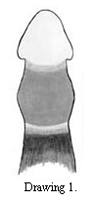
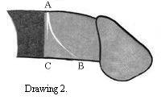
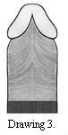
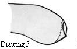

This file is a continuation
of "Phimosis".
RESEARCH ON PHIMOSIS
To further this research please send me photos and fill in the questionnaire
From 1996
INTRODUCTION
It was never among my original intentions to present a detailed anatomical
study. However I have heard a number of anatomical descriptions which
are concurrent with each other, and as such information is apparently
not publicly available, I would like to present my findings, in the
hope that an urologist or other men with these conditions will give
the feedback necessary to build an accurate basic description.
The current definitions of phimosis usually state that retraction
is not possible with the condition. It is significant that these definitions
stipulate what phimosis does (i.e. the symptoms), rather than what
it actually is.
Apart from the tubular form of an infant phimosis;- in children,
youths, adults, cases of ripping, infections, old age, (and even death!);
phimosis appears to have one principle form: a band or ring of connective
tissue.
THE NATURE OF ADULT PHIMOSIS: THE PHIMOTIC RING
It is medically understood that phimosis "is" or results
in a tight foreskin and doctors are generally aware that phimosis consists
of a band of connective tissue. This is probably such an ordinary bit
of tissue, that it is doubtful if any urologist has
ever examined it or studied the variations in case to case.
|  |
This thin band or ring of connective tissue is embedded towards
the front of the inner foreskin and it narrows the opening of the foreskin.
As phimosis effects the inner foreskin, it is practically impossible
for most men with this condition to retract their foreskin enough to
be able to examine it. With a relative phimosis, when lubricated, if
the foreskin can be retracted, the tightness becomes visible around
the shaft as a thin white band. Seen from above, this white band is
located around 10 to 15mms away from the join between inner and outer
foreskin. When the foreskin is retracted the ring produces an hourglass
appearance around the shaft.
Drawing 1. shows an erectile degree of phimosis which is unnoticeable
when flaccid. The dark shadowed area indicates the outer foreskin.
(The foreskin is being held back to prevent the band from slipping
forwards). |
The phimotic ring is apparently usually thickest on the top side.
However as it runs laterally, the band of connective tissue can become
thinner, and even occasionally divide in separate grooves.
These lines can run either parallel to the join between inner and
outer foreskin (A-C), or they can curve round towards the frenulum
(A-B). Thus they follow the natural contours of the skin in this area.
Drawing 2 depicts the foreskin after a frenoplasty (thus the foreskin
is spread out) - It is certain that previously the line AC was nearer
to and possibly concurrent with line AB.
|
 |
|  |
Drawing 3. shows the approximate contours of the inner foreskin
under the penis. Due to removal of the frenulum, this diagram allows
us a rare complete view of these skin structures. Note how these contours
are formed around the two clove shapes underneath the glans.
The outer foreskin may retract in a straight line underneath, or
in an upside down "V" shape depending on the length of the
frenulum as shown in Drawing 4. (How far can the upside down "V"
shape extend, before it indicates frenulum breve?)
|
|
|  |
The dotted line in Drawing 5 shows the approximate
position of the phimotic ring. The fact that often (always?) underneath
the ring lies further away from the tip of the foreskin, would explain
the occasional reports that while the foreskin is tight on top, underneath
a small flap, like an ear lobe, lies free. This could be a helpful
factor for diagnosis. |
If you have a phimosis, but there is no sign of a phimotic ring,
in the name of research, please contact me with a brief description.
THE RIDGED BAND
(If you have a phimotic ring do NOT repeat the following examination.
The extremely strong retraction which is necessary may have serious
results which damages the erectile tissues).
This phimotic band at its thickest, is about one tenth of an inch
(2 to 3 mms.) across and by retracting quite firmly, to spread out
the white area as wide as possible, it is possible, (particularly with
the help of a magnifying glass), to see a series of around ten ridges;
closer inspection with for example a finger nail quite distinctly reveals
an totally insensitive gristly ridged band of "dead" white
coloured skin.
Research in the Medical Studies
My research in the medical studies shows that I can be excused for
believing that there has been very little research in this area ....
However a few studies throw some light on the subject. OJ Clemmensen defines the histology (the cellular structure) of
various types of this phimotic skin tissue and this leads to a new
understanding of appropriate treatment. Ironically Taylor provides the most accurate description of the position of the phimotic ring.
Please read "Research
in the Medical Studies" for further description of phimotic
ring |